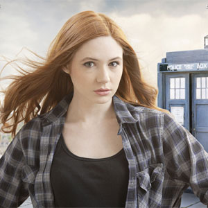

| Rose Tyler |
| Martha Jones |
| Jack Harkness |
| Lady Christina de Souza |
| Rory Williams |
| Amy Pond |
| Clara Oswald |
| River Song |
The Companions
Amy Pond
Amelia Jessica "Amy" Pond is a fictional character portrayed by Karen Gillan in the long-running British science fiction television series Doctor Who.
Amy is a companion of the series protagonist the Doctor, in his eleventh incarnation, played by Matt Smith. She appears in the programme from the fifth series (2010) to midway through theseventh series (2012).
he Doctor first meets Amelia when she is seven years old and disturbed by a crack in her wall. He promises to return to the lonely girl in 5 minutes and take her with him in his time and space machine the TARDIS, but accidentally arrives twelve years later, by which time Amy has become cynical about her "imaginary friend".